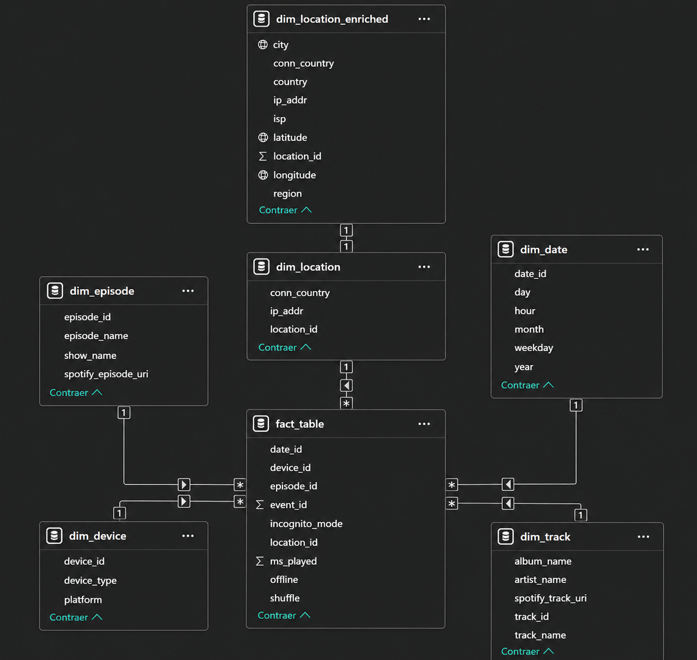
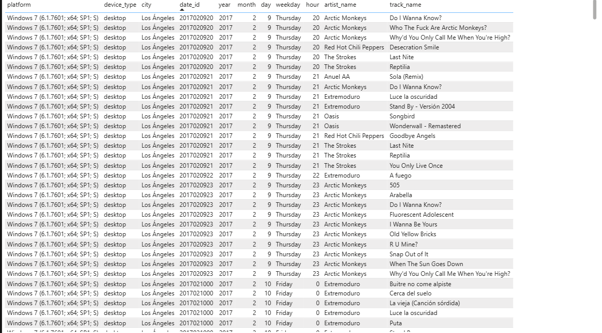
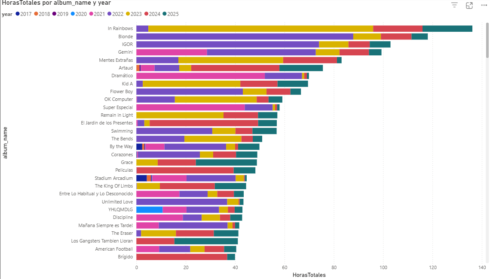
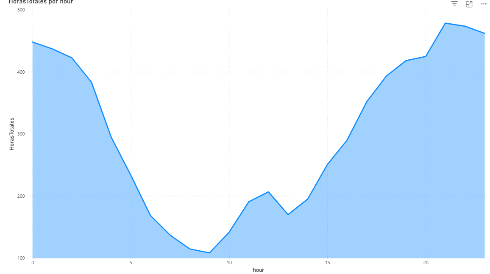
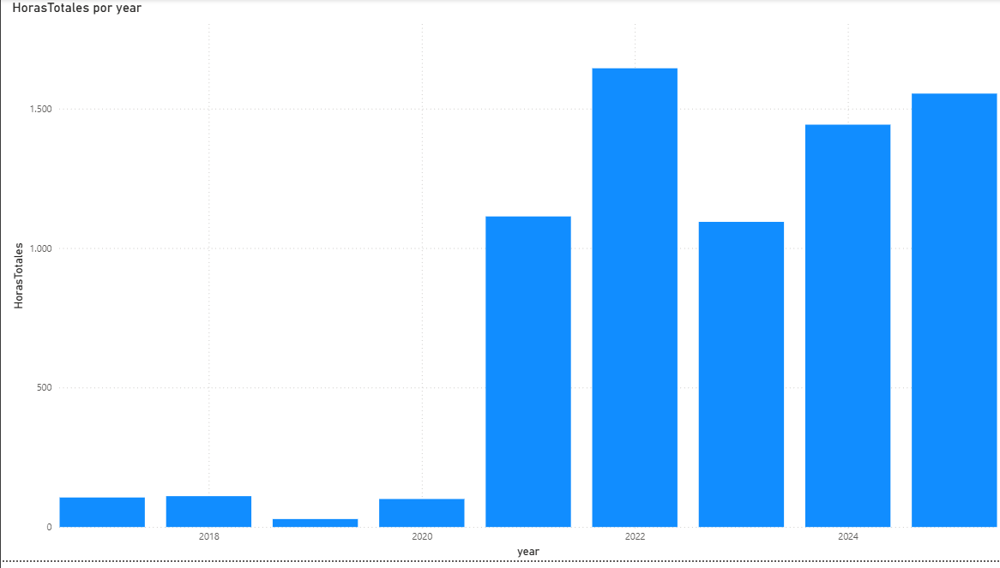
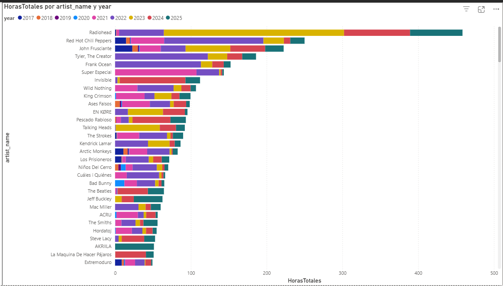
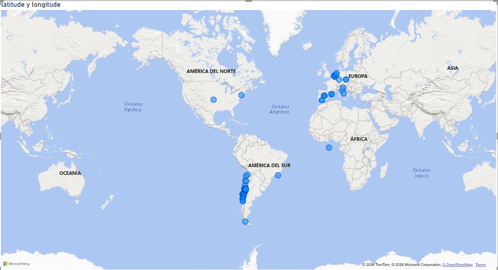
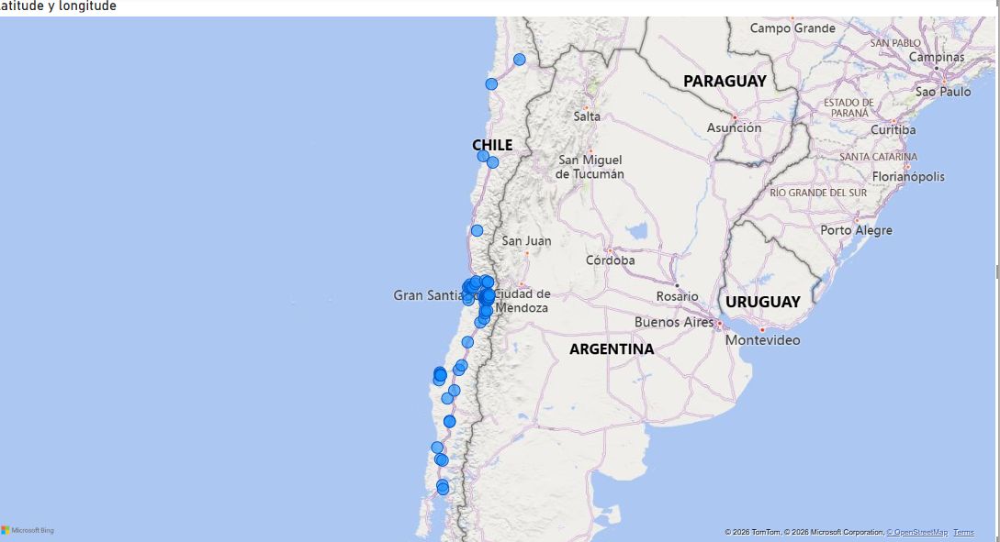
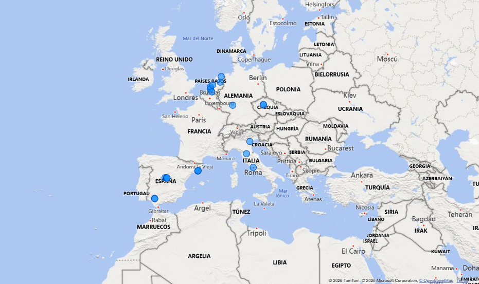

Descripción del proyecto
Este portafolio presenta un análisis integral de datos de reproducción de Spotify, con métricas detalladas sobre hábitos de escucha, patrones de comportamiento e información geográfica. El proyecto combina procesamiento de datos, visualización y análisis geográfico para ofrecer una visión clara de los patrones de consumo musical.
📊 Procesamiento de datos
Pipeline ETL sobre el historial de reproducción de varios años
🗺️ Análisis de geolocalización
Seguimiento geográfico por IP de la actividad de streaming
📈 Analítica e insights
Visualización amplia de patrones de escucha y tendencias
Visualizaciones del panel

Arquitectura de la base de datos
Esquema en estrella para almacenamiento y consulta eficientes

Historial completo de reproducción
Vista global de toda la actividad de escucha a lo largo del tiempo

Álbum más escuchado
Preferencias de álbumes y análisis de frecuencia de escucha

Patrones de escucha por hora
Análisis de en qué momentos del día se escucha más música

Horas totales por año
Estadísticas y tendencias de escucha año a año

Artistas destacados por año
Seguimiento de artistas favoritos y su evolución en el tiempo

Distribución geográfica
Visualización en mapa de las ubicaciones de reproducción

Mapa de calor por ubicación
Análisis de densidad de la actividad de escucha por región

Insights regionales
Desglose geográfico detallado de los patrones de streaming
Stack tecnológico
¿Quieres saber más?
Profundiza en los detalles técnicos, la metodología y el análisis completo de este proyecto de analítica con datos de Spotify.
Leer la documentación completa